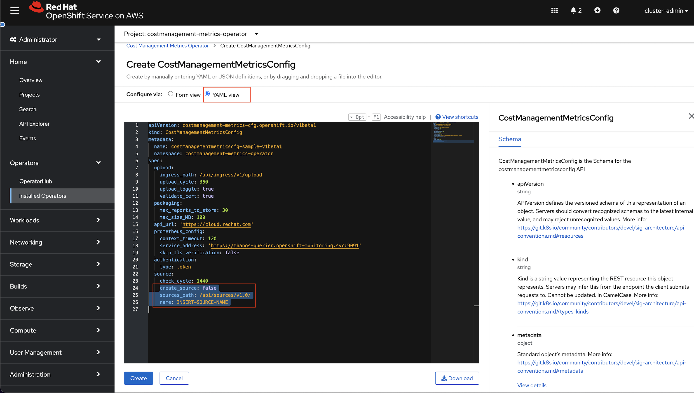
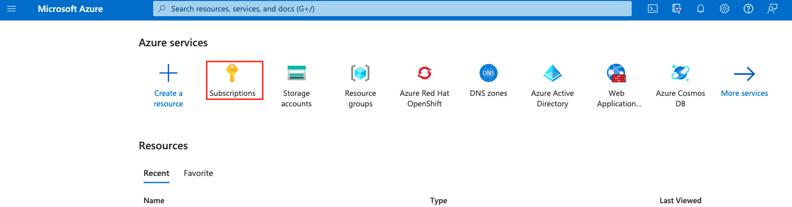

Red Hat Cost Management for Cloud Services
Author: Charlotte Fung
Last edited: 09/05/2022
Adopted from Official Documentation for Cost Management Service
Red Hat Cost Management is a software as a service (SaaS) offering available free of charge as part of your Red Hat subscriptions. Cost management helps you monitor and analyze your OpenShift Container Platform and Public cloud costs in order to improve the management of your business.
Some capabilities of cost management are :
- Visualize costs across hybrid cloud infrastructure
- Track cost trends
- Map charges to projects and organizations
- Normalize data and add markups with cost models
- Generate showback and chargeback information
In this document, I will show you how to connect your OpenShift and Cloud provider sources to Cost Management in order to collect cost and usage.
Prerequisites
- A Public Cloud subscritption (Azure Subscription)
- An OpenShift Cluster (to create an Azure Red Hat OpenShift (ARO) cluster, click here)
Adding your OpenShift source to Cost Management
Installing the Cost Management Metric Operator
-
Log into the Openshift cluster web console with cluster-admin credentials
-
On the left navigation pane under Administator perspective, select Operators --> OperatorHub

- Search for and locate cost management metrics operator. Click on the displayed Cost Management Metrics Operator

-
When the Install Operator window appears, you must select the costmanagement-metrics-operator namespace for installation. If it does not exist, it will be created for you. Click on install button.
-
After a short wait, Cost Management Metrics Operator appears in the Installed Operators tab under Project: all Projects or Project: costmanagement-metrics-operator
Configuring the Operator instance for a new installation
-
Once installed, click on the Cost Management
-
In the detail window, click + Create Instance
-
A Cost Management Metrics Operator > Create CostManagementMetricsConfig window appears
-
Click the YAML view radio button to view and modify the contents of the YAML configuration file

- Modify the following two lines in the YAML file to look like the following
Change
SOURCE-NAMEto the new name of your source (ex.my-openshift-cost-source)
yaml
create_source: true
name: <SOURCE-NAME>
- Click the Create button. This creates a new source for cost management that will appear in the console.redhat.com Cost Management applications
Adding your Microsoft Azure source to Cost Management
1. Creating a Microsoft Azure Source in your Red Hat account
- In the console.redhat.com click on All apps and services tab in the left top corner of the screen to navigate to this window. Click on Sources under Settings

-
On Sources page, click on Cloud sources tab and then click Add a source. This opens up the Sources Wizard
-
Enter a name for your source and click next
-
Select cost management as the application and Microsoft Azure as the source type.
-
Click Next. We will create the storage account and resource group in Azure account before proceeding. Keep this window open.
2. Configuring your Microsoft Azure
The following steps are required to configure your Azure account to be a cost management source
- Creating a storage account and resource group
- Configuring a storage account contributor and reader roles for access
- Scheduling daily exports
2.1 Creating an Azure resource group and storage account using Azure CLI
- First create a new resource group
bash
az group create \
--name storage-resource-group \
--location eastus
- If you're not sure which region to specify for the
--locationparameter, you can retrieve a list of supported regions for your subscription with theaz account list-locationscommand.
bash
az account list-locations \
--query "[].{Region:name}" \
--out table
- Next, create a standard general-purpose v2 storage account with read-access geo-redundant storage. Ensure the name of your storage account is unique across Azure
bash
az storage account create \
--name <account-name> \
--resource-group storage-resource-group \
--location eastus \
--sku Standard_RAGRS \
--kind StorageV2
-
Make note of the resource group and storage account. We will need them in the subsequent steps
-
Return to Sources wizard in console.redhat.com, enter the Resource group name and Storage account name and click Next. Leave this window for now and proceed to next step below.
2.2 Configuring Azure roles using Azure CLI
We need to grant cost management read-only access to Azure cost data by configuring a Storage Account Contributor and Reader role in Azure
- Run the following command to obtain your Subscription ID:
bash
SUBSCRIPTION=$(az account show --query "{subscription_id: id}" -o tsv)
-
Return to the console.redhat.com Sources wizard, enter your Subscription ID. Click Next to move to the next screen
-
In Azure CLI, create a cost management Storage Account Contributor role, an obtain your tenant ID, client (application) ID, and client secret
bash az ad sp create-for-rbac -n "CostManagement" \ --role "Storage Account Contributor" \ --query '{"tenant": tenant, "client_id": appId, "secret": password}' -
Return to Sources wizard in console.redhat.com, enter your Azure Tenant ID, Client ID, and Client Secret.
-
Run the following command to create cost management Reader role with your subscription ID. Copy the full command from the Sources wizard, which will automatically substitute your Azure subscription ID obtained earlier.
bash
az role assignment create --role "Cost Management Reader" \
--assignee http://CostManagement --subscription ${SUBSCRIPTION}
1. Click Next in Sources wizard.
2.3 Configuring a Daily Azure data export schedule using Azure Portal
Cost management requires a data export from a Subscription level scope
- In the Azure Portal home page, click on Subscriptions

- Select the Subscription you want to track from the list, and then select Cost Analysis in the menu. At the top of the Cost analysis page, select configure subscription

- Click on the Export tab, and then Schedule export

- In the Exports wizard, fill out the Export details

-
For Export Type, select Daily export of billing-period-to-date costs
-
For Storage account, select the account you created earlier
-
Enter any value for the Container name and Directory path for the export. These values provide the tree structure in the storage account where report files are stored.
-
Click Create to start exporting data to the Azure storage container.
-
Return to Sources wizard after creating the export schedule and click Next. Review the source details
-
Click Finish to complete adding the Azure source to cost management
Cost management will begin polling Azure for cost data, which will appear on the cost management dashboard (console.redhat.com/openshift/cost-management/).
Managing your Costs
After adding your Openshift Container Platform and Cloud Provider sources, Cost management will show cost data by
-
Source
-
Cloud provider cost and usage related to running your OpenShift Container Platform clusters on their platform
See the following video for a quick overview of Cost Management for OpenShift followed by a demo of the product
Next steps for managing your costs
-
Limiting access to cost management resources - Use role-based access control to limit visibility of resources in cost management reports.
-
Managing cost data using tagging - Tags allow you to organize your resources by cost and allocate the costs to different parts of your cloud infrastructure
-
Using cost models - Configure cost models to associate prices to metrics and usage.
-
Visualizing your costs using Cost Explorer - Allows you to see your costs through time.